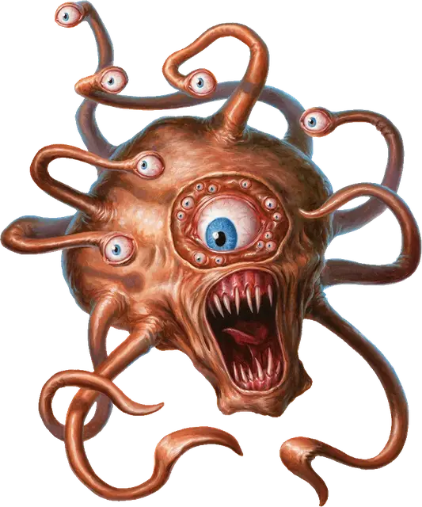

Гаут
Gauth
Средняя Аберрация, законно-злая

Класс Доспеха 15 (природный доспех)
Хиты 67 (9к8 + 27)
Скорость 0 футов, летая 20 футов (парит)
| мод | спас | ||
|---|---|---|---|
| СИЛ | 10 | +0 | +0 |
| ЛОВ | 14 | +2 | +2 |
| ТЕЛ | 16 | +3 | +3 |
| мод | спас | ||
|---|---|---|---|
| ИНТ | 15 | +2 | +5 |
| МДР | 15 | +2 | +5 |
| ХАР | 13 | +1 | +4 |
Навыки Восприятие +5
Иммунитет к состояниям сбивание с ног
Чувства тёмное зрение 120 футов, пассивное Восприятие 15
Языки Глубинная речь, Подземный
Опасность 6 (2300 опыта)
Бонус мастерства +3
Среда обитания Подземье
Особенности
Ошеломляющий взгляд. . Когда существо, которое может видеть центральный глаз Гаута, начинает свой ход в 30 футов от него, Гаут может заставить существо совершить спасбросок Мудрости Сл 14, если Гаут дееспособен и может видеть существо. При провале существо ошеломлено до начала своего следующего хода.
Если не застано врасплох, существо может отвести взгляд в начале своего хода, чтобы избежать спасброска. В таком случае оно не может видеть Гаута до начала своего следующего хода, когда оно снова может выбрать отвод взгляда. Если существо смотрит на Гаута до начала своего следующего хода, оно должно немедленно совершить спасбросок.
Предсмертная боль. . Когда Гаут умирает, магическая энергия в нём взрывается, и каждое существо на расстоянии до 10 футов от него должно совершить спасбросок Ловкости Сл 14, получая 13 (3к8) урона силовым полем при провале, или половину урона при успешном спасброске.
Действия
Укус. Рукопашная атака оружием: +6 к попаданию, досягаемость 5 футов, одна цель. Попадание: 9 (2к8) колющего урона.
Лучи из глаз. Гаут выстреливает тремя случайными из следующих магических лучей из глаза (перебрасывайте повторы), выбирая от одной до трех целей, которые он может видеть не далее 120 футов от него:
• 1. Антимагический луч. Цель должна преуспеть в спасброске Ловкости Сл 14, иначе один из его магических предметов теряет все свои магические свойства до начала следующего хода Гаута. Если предмет заряжаемый, он также теряет 1к4 зарядов. Предмет определяется случайным образом, одноразовые предметы, вроде зелий и свитков, игнорируются.
• 2. Ослабляющий луч. Цель должна преуспеть в спасброске Телосложения Сл 14, получая 18 (4к8) урона некротической энергией при провале, или половину урона при успешном спасброске.
• 3. Толкающий луч. Цель должна преуспеть в спасброске Силы Сл 14, иначе сдвигается на 15 футов в направлении, противоположном Гауту, также скорость существа уменьшается вдвое до начала следующего хода Гаута.
• 4.Огненный луч. Цель должна преуспеть в спасброске Ловкости Сл 14, или получить 22 (4к10) урона огнём.
• 5.Парализующий луч. Цель должна преуспеть в спасброске Телосложения Сл 14, иначе она парализована на 1 минуту. Цель может повторять спасбросок к конце каждого своего следующего хода, оканчивая паралич при успехе.
• 6.Усыпляющий луч. Цель должна преуспеть в спасброске Мудрости Сл 14, иначе она засыпает и пребывает в бессознательном состоянии в течение 1 минуты. Цель просыпается, если получает урон или другое существо действием будит его. Этот луч не оказывает воздействия на конструктов и нежить.
Описание
Гаут это голодное тираническое бехолдеро–подобное существо, которое поедает магию и старается собирать дань со всех слабее себя. Его тело около 4 футов в диаметре, с шестью глазными стебельками, центральным глазом (иногда окруженные множеством глаз поменьше) и четырьмя небольшими хватающими щупальцами около рта. Его цвет и текстура варьируется примерно так же как у истинного бехолдера.
Магический Метаболизм. Гаут может питаться мясом, но предпочитает поддерживать себя силой, вытягиваемой из магических объектов. Если он не питался магией несколько недель, то его силой вырывает на домашний план, так что он постоянно ищет новые предметы для поедания. Гаут может нанимать существ на службу, чтобы те приносили ему предметы для пропитания.
Случайный Призыв. Когда ритуал призыва наблюдателя [spectator] проваливается, гаут может броситься через испорченное соединение, прибывая сразу же или несколько минут спустя. Он может представиться бехолдером невежественным существам в попытке запугать их или наблюдателем своему вызывателю, чтобы высосать магию из предметов, которые он должен охранять.
Младший Тиран. Бехолдер обычно прогоняет или убивает любых гаутов, которые попадают на его территорию, но он может решить взять их в рабство и использовать как лейтенантов. Гаунты менее ксенофобны чем бехолдеры, так что они могут формировать маленькие кластеры и работать вместе, хотя они так же могут полностью игнорировать друг друга.